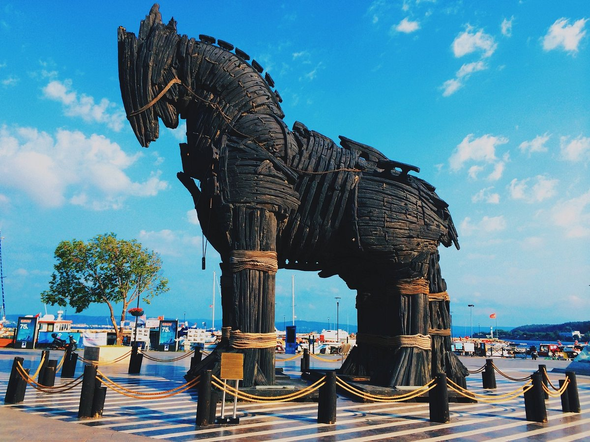

TRUVA ATI
Ayrıntılı bilgi için tıklayınız

ÇANAKKALE TARİHİ
Ayrıntılı bilgi için tıklayınız
Ayrıntılı bilgi için tıklayınız
Ayrıntılı bilgi için tıklayınız
Çanakkale, Türkiye'nin kuzeybatısında, Marmara Bölgesi'nde yer alan tarihi ve kültürel zenginlikleriyle ünlü bir şehirdir. Ege Denizi ile Marmara Denizi'ni birbirine bağlayan Çanakkale Boğazı'na ev sahipliği yapan bu şehir, özellikle I. Dünya Savaşı'ndaki Çanakkale Savaşı'nın gerçekleştiği yer olarak büyük bir öneme sahiptir. Gelibolu Yarımadası'ndaki anıtlar ve şehitlikler, her yıl binlerce ziyaretçiyi kendine çeker. Aynı zamanda antik Truva kenti de Çanakkale sınırları içinde yer almakta olup, mitolojik hikayeler ve arkeolojik kazılarla ilgilenenler için eşsiz bir destinasyondur. Doğal güzellikleri, tarihi dokusu ve kültürel etkinlikleri ile Çanakkale, hem yerli hem de yabancı turistler için cazip bir rotadır.
Çanakkale Abidesi, Türkiye'nin Çanakkale ilindeki Gelibolu Yarımadası'nda, Morto Koyu yakınlarında yer alan ve I. Dünya Savaşı sırasında Çanakkale Savaşı'nda hayatını kaybeden Türk askerlerinin anısına inşa edilmiş anıtsal bir yapıdır. 41,7 metre yüksekliğindeki bu anıt, 1960 yılında tamamlanmış olup, dört büyük sütunun taşıdığı devasa bir yapıdan oluşur. Abide, savaştaki kahramanlıkları ve fedakarlıkları simgelerken, aynı zamanda barış ve dostluk mesajı da vermektedir. Ziyaretçiler, burada yer alan müze ve şehitlikleri gezerek tarihî bir yolculuğa çıkabilir ve savaşın izlerini yakından görebilirler. Çanakkale Abidesi, her yıl düzenlenen anma törenleriyle de milli birlik ve beraberlik duygusunu pekiştiren önemli bir sembol olarak öne çıkmaktadır.
Çanakkale'deki eski kordonda yer alan Truva Atı, 2004 yapımı "Troy" filminde kullanılan orijinal film seti objesi olarak ünlüdür. Brad Pitt'in başrolünde oynadığı bu Hollywood yapımı filmin çekimlerinin ardından Çanakkale'ye hediye edilen at, şehrin simgelerinden biri haline gelmiştir. Ahşap malzemeden yapılmış ve oldukça etkileyici bir görünüme sahip olan bu Truva Atı, mitolojik Truva Savaşı'na ve Antik Truva kentine atıfta bulunur. Eski kordon boyunca yürüyüş yapan ziyaretçiler, bu ikonik yapıyı görmeden geçmezler. Truva Atı, fotoğraf çekmek isteyen turistlerin ve tarih meraklılarının ilgisini çekerken, Çanakkale'nin tarihi ve kültürel mirasını da vurgulayan önemli bir semboldür.
Çanakkale Boğazı, Türkiye'nin kuzeybatısında, Marmara Denizi ile Ege Denizi'ni birbirine bağlayan stratejik öneme sahip dar bir su geçididir. Yaklaşık 68 kilometre uzunluğunda ve en dar yeri 1,2 kilometre genişliğinde olan bu boğaz, tarih boyunca birçok medeniyetin ve askeri harekâtın merkezi olmuştur. I. Dünya Savaşı'nda Çanakkale Savaşı'nın yaşandığı bu bölge, Türk tarihinin en destansı savunmalarından birine sahne olmuştur. Boğazın her iki yakasında yer alan Çanakkale ve Kilitbahir kaleleri, bu stratejik geçidin kontrolünü sağlamak için inşa edilmiştir. Günümüzde Çanakkale Boğazı, sadece tarihi ve askeri önemiyle değil, aynı zamanda doğal güzellikleri ve yoğun deniz trafiği ile de dikkat çekmektedir. Bu su yolu, hem ticari gemiler hem de turistler için önemli bir rotadır ve bölgenin ekonomik ve kültürel yaşamında büyük bir rol oynar.
Çanakkale, tarih boyunca birçok medeniyete ev sahipliği yapmış ve stratejik konumu nedeniyle her dönem büyük öneme sahip olmuştur. Antik çağlarda Truva Savaşı'na sahne olan bu bölge, Homeros'un ünlü destanı "İlyada"da anlatılan efsanevi savaşın geçtiği yer olarak bilinir. Bizans, Roma ve Osmanlı İmparatorlukları döneminde de stratejik bir geçit olan Çanakkale, özellikle Osmanlı döneminde önemli bir askeri ve ticari merkez haline gelmiştir. I. Dünya Savaşı sırasında, 1915-1916 yıllarında gerçekleşen Çanakkale Savaşı, Türk tarihinin en destansı direnişlerinden birine sahne olmuştur ve Mustafa Kemal Atatürk'ün askeri dehasının parladığı yerlerden biri olmuştur. Bu savaş, Türk milletinin bağımsızlık ve özgürlük mücadelesinin sembollerinden biri haline gelmiştir. Çanakkale'nin tarihi, zaferlerle, kahramanlıklarla ve zengin kültürel mirasıyla şekillenmiş, bu da onu Türkiye'nin en önemli ve anlamlı şehirlerinden biri yapmıştır.